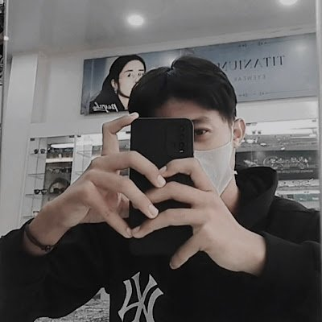

Selamat Datang di Peternakan Sejahtera
Kami menyediakan segala informasi mengenai kebutuhan peternakan anda,kami juga menyediakan konsultasi dan pelatihan bagi anda
Data Tenaga Ahli

Nama: Bagus Firmansyah
Bidang Keahlian: Kesehatan Hewan Dan Managemen Peternakan
Institusi: Peternakan Sejahtera Mandiri
Deskripsi: Tenaga Ahli yang berfokus pada pemeliharaan kesehatan hewan ternak, pencegahan penyakit, pengelolaan kandang, dan peningkatan produktivitas kesehatan.
Data layanan dapat mencakup konsultasi kesehatan ternak, edukasi pakan, dan pedampingan kebersihan kandang